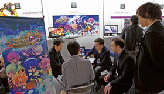
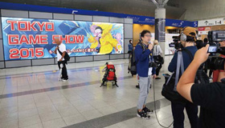
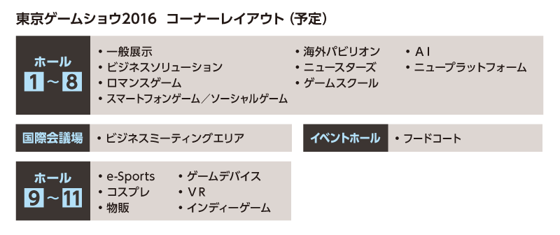

- 名 称 ：
- 東京ゲームショウ2016
- 会 期 ：
- ビジネスデイ9月15日（木）・16日（金） 10：00～17：00
［※ビジネスデイはプレス関係者およびビジネス関係者のみのご入場となります。］ 一般公開9月17日（土）・18日（日） 10：00～17：00
［※状況により9：30に開場する場合があります。］ - 会 場 ：
- 幕張メッセ 1-11ホール, イベントホール, 国際会議場
- 主 催 ：
- 一般社団法人コンピュータエンターテインメント協会（CESA）
- 共 催 ：
- 日経BP社
- 後 援 ：
- 経済産業省（予定）
- 特別協力：
- ドワンゴ
- 来場予定者数 ：
- 23万人
- 募集小間数 ：
- 2,000小間
- 入 場 料 ：
- 一般 [ 中学生以上 ] 1,200円 税込 （前売券：1,000円 税込） ／ 子供 [ 小学生以下 ] 無料
東京ゲームショウは、世界中から注目が集まるグローバルなイベントです。2015年は、37カ国・地域から246社の海外企業による出展があり、国内出展社数を超えました。海外メディアも過去最多の661媒体・1419人（34カ国・地域）が来場し、国際的なイベントとして認知度とステイタスはますます向上しています。また、家庭用ゲームからスマートフォン、PCまでの多様なプラットフォームに幅広く対応しながら、VR（仮想現実）やe-Sportsなどの新しい技術やムーブメントに対しても積極的に取り組み、ゲームマーケットの動きに合わせて進化し続けています。
- 今回新しい出展コーナーを立ち上げ、同時に関連した主催者企画を多数用意して、集客力を増強し、出展効果を高めます。例えば、新設のVRコーナーには、大型のVR体験ゾーンを設置したり、ファミリーゲームパークでも、体験ゾーンを増やすなどして、集客します。
- 東南アジアなどアジア圏からの出展を増やす施策を継続させつつ、さらに東欧や中南米といった地域からのゲーム関連企業を誘致します。海外から幅広く参加企業を募集することで、ビジネスチャンス拡大を目指します。
- 
- 世界各国・地域から選び抜かれたメディアパートナーを通じた情報発信力に加えて、ドワンゴ（niconico）を特別協力に迎えて公式動画チャンネルを強化します。また、4種類のSNSを使った情報発信にも取り組みます。
- 
東京ゲームショウは、幕張メッセ全館（1-11ホール）を効率良く使うことで、会場内の混雑緩和を図る計画です。今回は、1-8ホールと9-11ホールの中間にあるイベントホールをフードコート／休憩エリアとすることで、来場者が行き来しやすい環境を作ります。新設するVRコーナーや物販、e-Sports、ゲームデバイス、コスプレ、インディーゲームなどのコーナーは9-11ホールに配置する予定です。
※使用するホール数やレイアウトなどは、7月に開催する出展社説明会で決定します。
